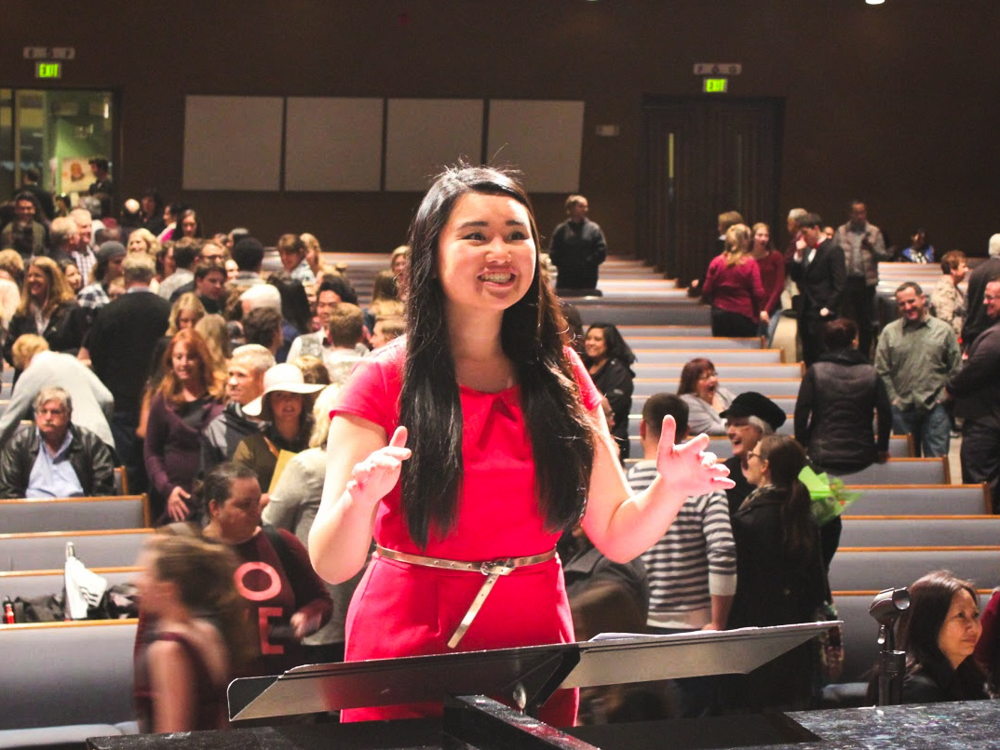
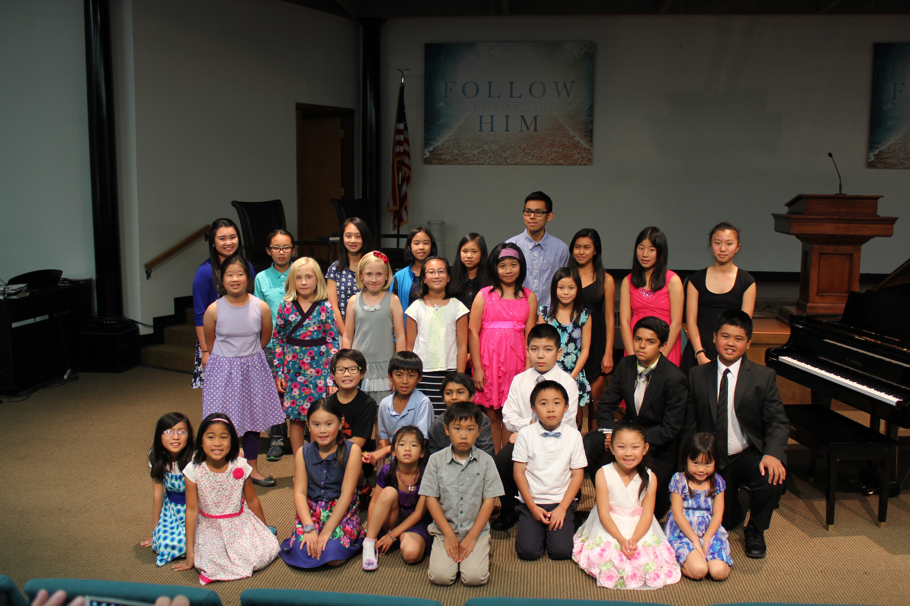
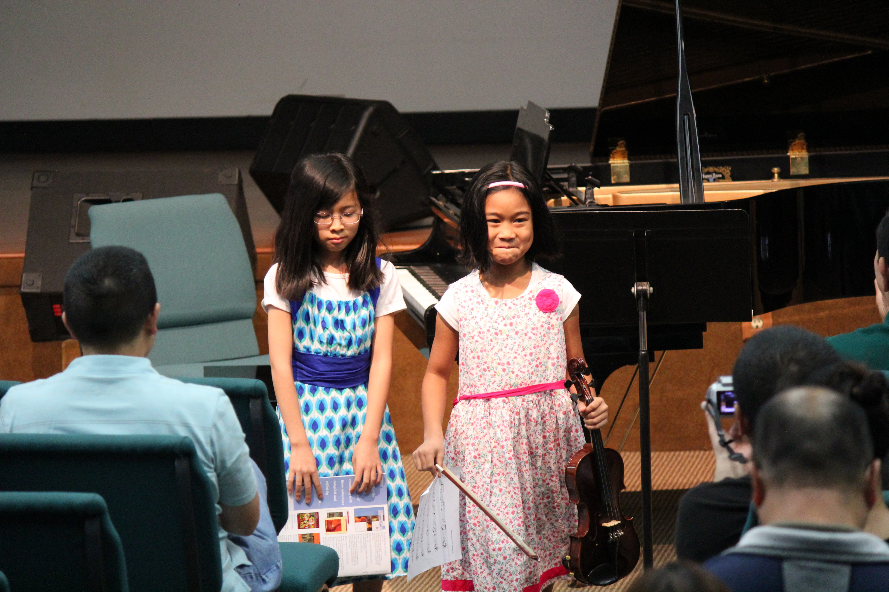
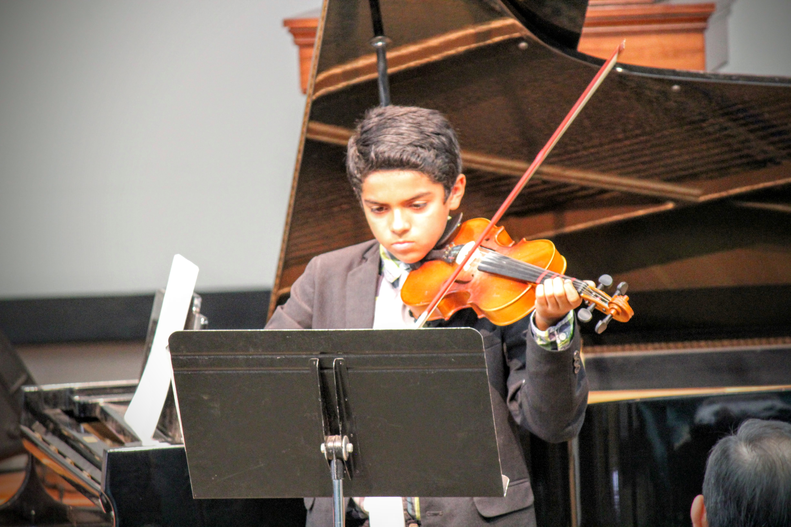
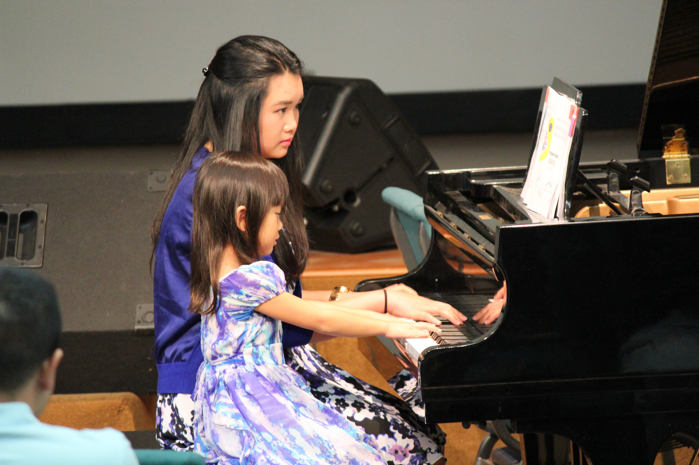
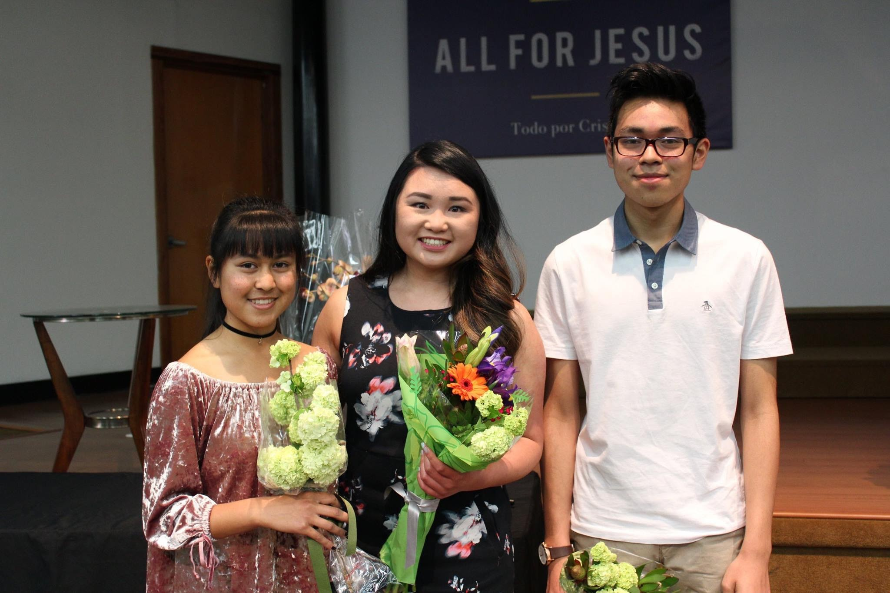
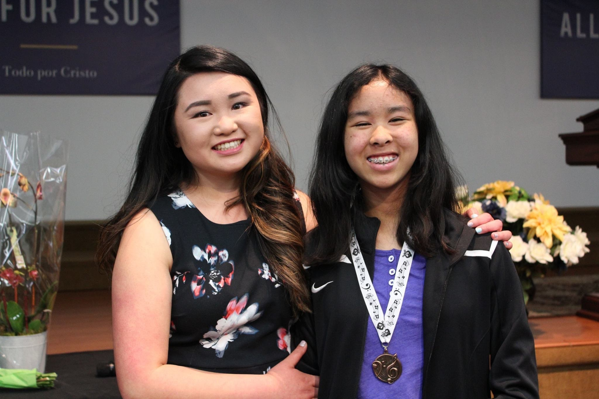
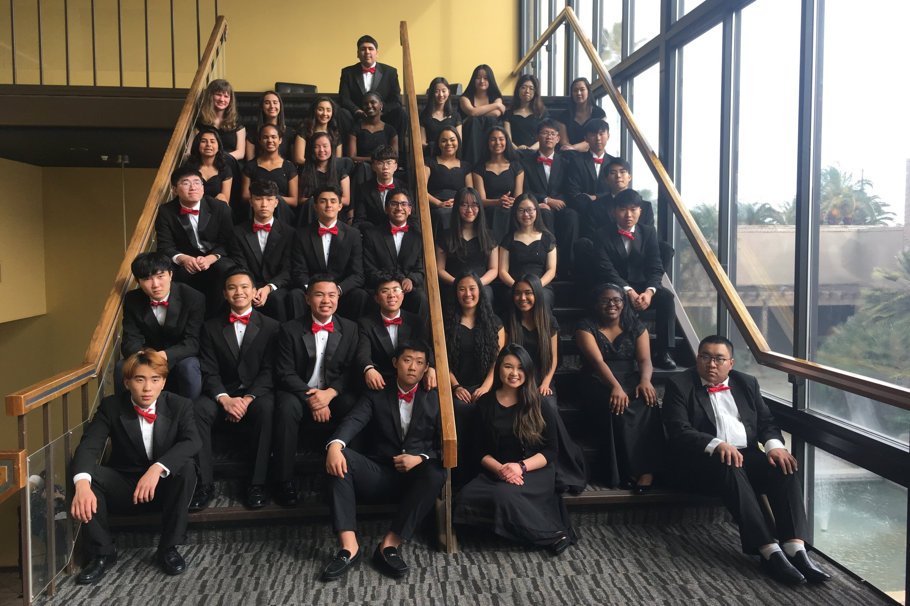
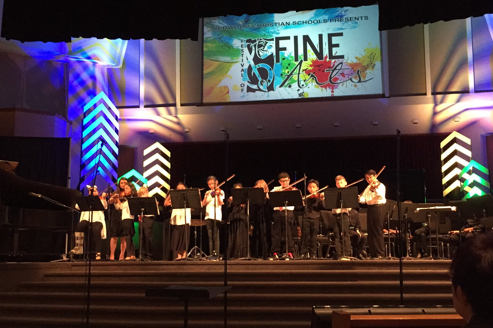

About Rachel
Rachel Fong is the chorale and orchestra director at Redwood Christian High School located in San Lorenzo, CA. She also privately teaches the piano and violin to students from elementary to high school age.Music has always been Rachel’s life. She started piano lessons at the age of five, started violin lessons at seven, and began privately teaching in 2011. Rachel received her Bachelor of Music in Music Education with a focus in chorale conducting from San Jose State University. Since receiving her degree, Rachel has conducted for various events in addition to directing her high school chorale and privately teaching lessons. She is not only very involved with choirs, but also plays the piano, violin, and viola, having accompanied soloists, ensembles, and orchestras.
On her free time, Rachel enjoys spending time with her family and friends and serving in the music ministry at her church.
Please connect with Rachel on LinkedIn.
Teaching
Currently, Rachel is the director of the High School Choir and International Student Choir at Redwood Christian High School. She is also the director of Pure Joy, the Middle School Choir at Redwood Christian School. Rachel also leads the after school String Orchestra for the elementary school.ACSI Musicale: Every year, the high school choir participates in the Northern California ACSI Musicale, a music festival for high school students from Christian schools across Northern California. They meet in Sacramento, CA at Capitol Christian School to perform songs and glorify God.
Private lessons: Rachel teaches private lessons for piano and violin. She has over 20 years of experience in both instruments.
Please contact Rachel for private lesson inquiries.

Media
Photos

Studio Recital 2015

Studio Recital 2015

Studio Recital 2015

Studio Recital 2015

Studio Recital 2017

Studio Recital 2017

RCHS Choir 2017-2018

Redwood Christian Orchestra 2018
Videos
ASCI Musicale in Sacramento 2016: Choir Director for California Crosspoint High School Witness, Traditional
Spiritual, arranged by Jack Halloran
Jenny Lin Foundation Summer Youth Concert 2016: Guest conductor Simple Gifts by American Shaker Hymn arr. Jay Althouse